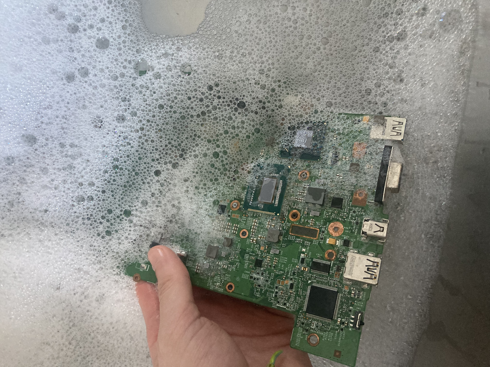
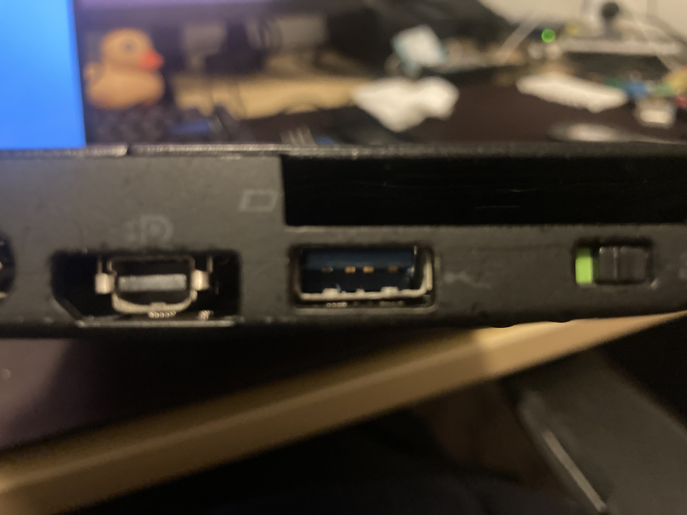
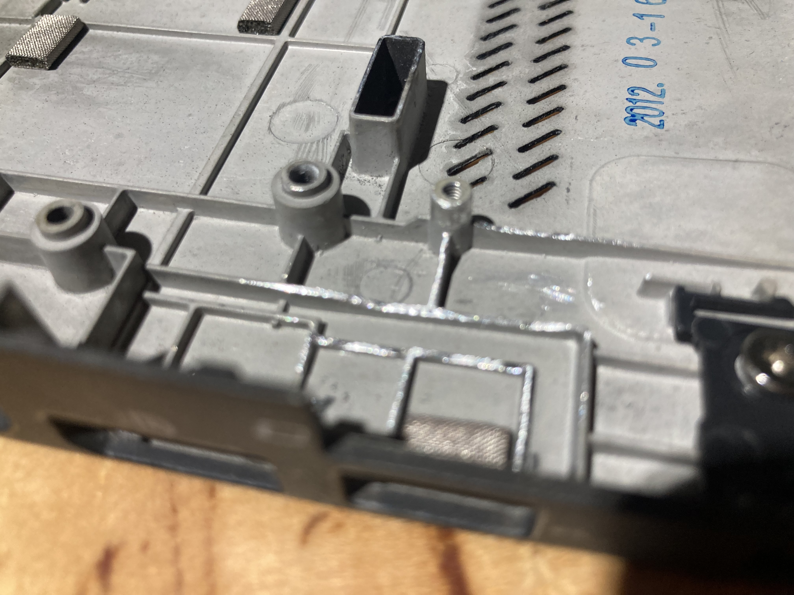
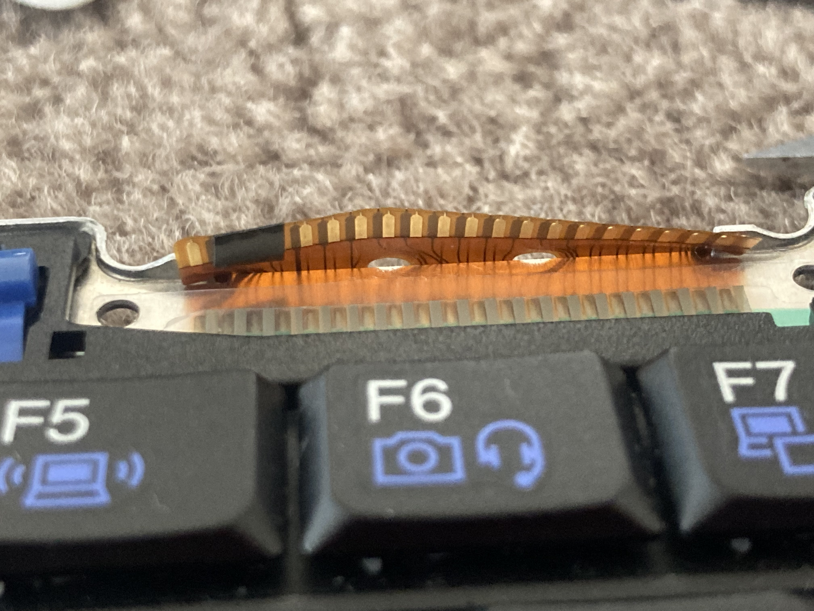
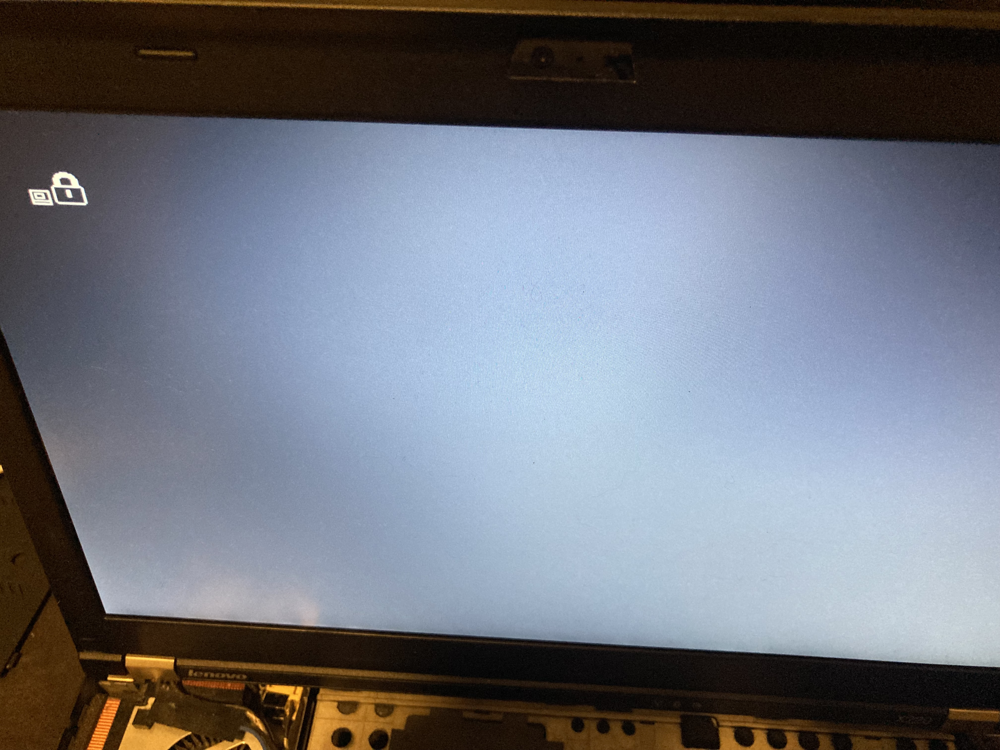
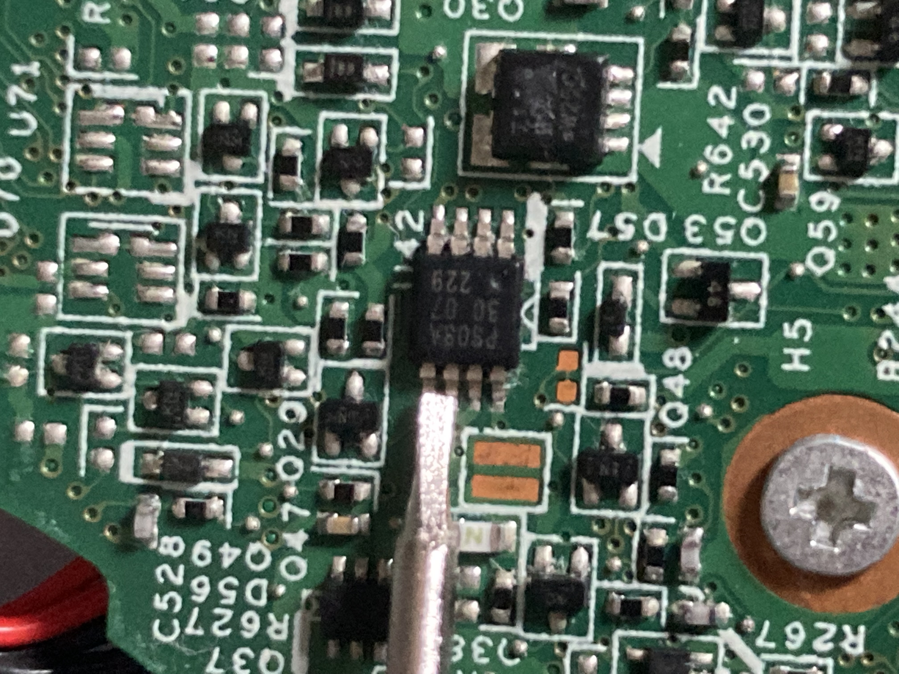

I needed a laptop for basic portable computing, so I built a laptop based on the Lenovo Thinkpad X220 and Thinkpad X230.
The primary use case for the laptop will be to act as a device for typing code and documents and light web surfing whilst traveling. Ideally it should fit the following design requirements
The Lenovo Thinkpad X220 laptop is a classic and well loved to this day. It has a great feeling keyboard, small yet built like a tank, good software support and can be picked up on the second hand market for cheap.
However using a laptop which was designed 10 years ago does come with some draw backs
The Lenovo Thinkpad X230 is the next generation up from the X220 featuring
So why not just use a Thinkpad X230? I dislike the feel of the chicklet keyboard and couldn't find a fully working X230 for a reasonable price.
Interestingly the Thinkpad X230 has a security vulnerability which allows for the embedded controller to be reprogrammed. This unlocks some neat functionality such as being able to modify the keyboard layout and remove the battery validation which blocks the usage of third party batteries. [1]
The Thinkpad X220 and X230 are very similar in their physical design. Therefore a common mod for the X230 is to replace the keyboard with the one from the X220. [2] But at the time, there were no undamaged Thinkpad X230's on the market so I decided to do the opposite and install an X230 motherboard into a X220 chassis.
So I brought a damaged Thinkpad X230 from ebay. It was missing a hard
drive and battery, the case was cracked from being dropped on one of
the corners and had what looked to be some minor water damage to the
screen. However the ebay listing showed it could boot so I was hopeful
that the motherboard was ok.
Upon taking apart the laptop it was very clear that the laptop had serious water damage, possibly from salt water. The bottom of the case was covered of metal corrosion and some of the metal components such as the CPU heatsink mount on the motherboard had rust spots. Fortunately it still booted and everything seemed to work.
A quick detour but possibly one of the reasons why the water damaged motherboard still worked was because Lenovo wraps their motherboards in a layer of plastic which is glued to the motherboard with a reasonable adhesive. Unfortunately that adhesive leaves a sticky residue which can't be easily removed with isopropyl alcohol. I was able to remove most of it with a citric acid based adhesive remover but that left a orange smelling residue all over the board and the only way to remove it was to give the board a wash in warm soapy water. I then left it for a few days to dry out completely. 
The Thinkpad X220 which I also brought was in much better shape. The keyboard keys are a little worn and there's a couple of dings but that's to be expected of a 10 year old laptop. Lenovo applies a soft touch coating to the top of the lid and the underside of the laptop in which turns sticky as it ages but that can be easily removed using some magic eraser.
The main physical differences between the X220 mother board and the X230 motherboard are
Whilst the different sized DisplayPort ports is only a problem aesthetically (as the display port hole in the case is larger then it needs to be) longer USB port does pose a problem as it collides with a support on the bottom of the case, pushing the USB port up. The laptop will still go together however that USB port won't line up correctly with it's hole, stopping one from plugging anything into it. Also bending the motherboard doesn't sound like a great idea. 
Luckily this can be solved by filing down the supports a little until the board nicely sits in position. The shiny spots in the following image were the areas which I filed. 
The keyboard connector pinouts for the X220 and X230 are slightly
different such that if you were to directly plug the keyboard in, it
would result in 3v3 being shorted to ground. However the pins that do
this aren't important to the keyboards functionality (as far as I can
tell, looking at the schematic they seem to be some sort of
identification pins) so we can just cover them with some electrical
tape.

There are plenty of guides on the internet (such as [2]) which give a step by step guide on how to do this. 
Putting things back together and powering on the Thinkpad X230 mainboard, we get greeted by a locked bios. 
Fortunately this is easy to fix. All one has to do is short the clock and data pins on the security EEPROM (U42) while entering the bios with a screw driver. The bios will happily ignore that there's a password. From there I cleared the bios and supervisor passwords then removed the screwdriver and saved the changes which overwrote the existing password. 
To finish up I flashed the bios with coreboot, replaced the fan/heatsink assembly with a new one from ebay as the X230 fan was destroyed and the X220 bearings were worn out and brought a new X230 battery from Duracell.
All in all I'm rather happy with the result. My main gripes with it are the lack of a USB-C (I've got a plan to fix that) and a short battery life. I get about 5 hours from a full charge however being able to swap the battery helps.
Extra photos are available in this blog's git repo. [4]